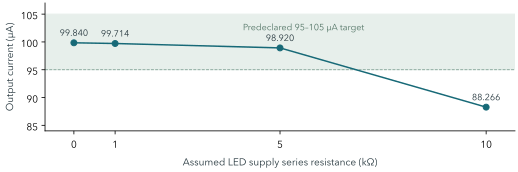
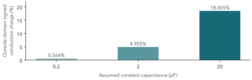

从已有证据到下一步决策
2026-10-11 · Open MicroLED Driver ASIC · 实验性研发方法验证与教学
本轮判断：保留单像素路线，先研究电压余量（headroom）与可实现的参考源，再建立独立 fault 关断，随后恢复实际供电和邻居条件。 同器件 LED 数据准备并行推进；阵列扩展需要明确的多通道问题和单像素进入条件。
本项目研究怎样把数字亮度命令转成可解释、可复查的 LED 电流。真正的难点是：数字命令正确后，器件、布线、电源和负载是否仍能产生预期的电流与最短脉冲；若不能，能否用受控实验找出原因。
现阶段的研究问题应收敛为：当前结果依赖多少理想参考源、供电和负载假设？这些条件怎样落实成可实现的单像素实验电路？ 本项目的直接价值是提供可复现的方法与教学证据，应用性能仍需后续测量。
| 现在掌握的事实 | 对方向的含义 |
|---|---|
| 已有布局、连接检查和限定范围 joint signal PEX | 可以从真实几何来源研究信号路径；还需完整供电与邻居证据 |
| 已测条件下满开约100 µA、最低码面积通过 | 保留现有基线，研究它何时失效及其依赖条件 |
| 静态表＋假设10 kΩ时降到88.266 µA | 电压余量已出现失败，应定位输出级与source的不同边界 |
| reference未实现，正常enable等待238.5 µs | 优先定义source与fault合同，不能用正常帧更新承担保护 |
| 真实LED只有一条静态曲线 | 脉冲与光学结论需要同器件动态数据 |
阅读路线： 第2页建立概念；第3–6页核查方法、条件与数据；第7–8页决定下一实验；第9页追溯来源。全文区分已有仿真、计算、推断与建议。
工作性质： 本轮复核既有证据、独立复算关键公式并重写研究判断，没有新 EDA run，也没有修改电路、模型或RTL。工程基线仍为 781ceb2（2026-10-07）；本报告是新的研究判断日期。证据清单
参考支路用 MREF 建立偏置，MOUT 将该偏置转成输出电流；MPASS 接通偏置，MCLAMP 在关闭时下拉 gate，另两只 MOS 构成 inverter。MREF/MOUT 为 W/L=20/4 µm，开关与反相器尺寸见实际电路。IREF=100 µA目前由外部理想/行为源提供；电流镜不等于已经有一个真实100 µA发生器。
1 MHz clock使每个slot为1 µs；256 slots构成256 µs帧。duty=1每帧开一个slot，256持续开；因此有257种执行状态。输入为12-bit不增加这个执行器的状态数；现有量化独立复算最大误差约0.195265个满量程百分点。
若开启电流恰为100 µA，最低码的理想平均电流和每帧电荷为：
Iavg = 100 µA / 256 = 0.390625 µA；Q₁ = 100 µA × 1 µs = 100 pC。
电容充放电可能产生正、负电流峰。判断最低码必须看完整窗口积分 Q=∫I(t)dt，同时核查节点电压、峰值与关断尾巴。只看平均值容易漏掉startup与stress；只看峰值也不能判断有效电荷是否正确。
电压余量同样重要。 LED需要一定Vf，输出MOS与连接也需要电压；简单预算为 Vavailable = VLED − Vf − I×Rseries。在精度允许范围内还能维持输出的最低余量称compliance边界，要由Iout误差实测/仿真确定，不能直接把一个VDSAT值当作±5%精度门槛。
当前平台的三个层次： Python接收完整帧并原子提交；真实单像素PWM RTL产生事件；事件以1 ns人为ramp驱动12-MOS联合信号模型。它是前向耦合验证，尚无receiver RTL、实际总线或4×4电气阵列。控制条件
检验假设： 在冻结的布局、负载与边界条件下，寄生和PWM切换不会使满开电流或最低码电荷超过项目预声明误差。
方法是实际RTL事件 → finite-slew PWL → 共同GDS抽取的selected signal PEX → SPICE waveform → 窗口积分与独立检查。nominal切口包含12 MOS、45 R、77显式C及34邻居端口。它确有物理来源；PG/source/body R、PG-only C被省略，邻居main设为理想0 V。抽取范围 E1
| 主实验条件 | 满开DC Iout | 最低码面积误差范围 |
|---|---|---|
| TT / 27°C / 3.3 V logic / 5 V LED | 100.752788 µA | nominal约−0.252% |
| SS / 85°C / 2.97 V / 4.5 V | 100.112984 µA | nominal约−0.681% |
| FF / 0°C / 3.63 V / 5.5 V | 101.423393 µA | nominal约−0.189% |
| 补充SS×HRHC、FF×LRLC | 主摘要分别记录 | 最大绝对误差0.700133% |
判据与分母： 满开目标100 µA±5%；面积±2%。robustness面积用同条件 duty=256 transient平均值作基准：εQ = [Iavg(d)/(Iavg(256)×d/256)−1]×100%。主积分窗514.5–1026.5 µs，共两帧；branch含LED位移电流。control回放另用独立满开DC作分母，需分开描述。主实验 E2
结论： 已测试包络下的器件与模型相容，可作为后续因果实验的对照基线。合成LED的温度随.temp改变，尚未校准；这不是MOS-only温漂。五RC style已提取，电气覆盖是三个nominal包络＋两个补点，未穷举3×5矩阵。
工程进展与证据边界： 模拟版图和共同top有声明范围的DRC/LVS；数字宏另有STA/SDF报告。共同bbox305×180 µm是macro范围，并非LED像素pitch或完整die。规则、连接、时序和晶体管结果分别成立；density/antenna可选模式、完整IR/EM、制造接受、silicon和光学仍需各自证据。physical / integration
37 transient／12 DC／146 guards说明主实验的工作范围；boundary摘要 passed=true 但 checks=[]仅表明数值完成，其中仍有工程失败。计数应回答覆盖了哪些问题，而不能替代研究结论。
问题： 用公开静态LED曲线替代合成负载后，5 V是否仍够用？公开曲线在100 µA处Vf=3.767910 V；合成基线是2.8 V，两者差约0.968 V。5 V减Vf仅剩1.232 V，再由输出级与连接分配。静态数据 E3

图1 既有v0.4 joint DC数据重绘，连线仅连接样点。TT、27°C、logic3.3 V、LED5 V、理想IREF100 µA；Rseries是假设变量，非实测PDN。
| 假设Rseries | Iout（µA） | 相对100 µA误差 | ±5%门槛 |
|---|---|---|---|
| 0 Ω | 99.840287 | -0.160% | 通过 |
| 1 kΩ | 99.714227 | -0.286% | 通过 |
| 5 kΩ | 98.920293 | -1.080% | 通过 |
| 10 kΩ | 88.265992 | -11.734% | 失败 |
依据与解释： 四点IREF始终100 µA，因此这一失败不能归因于IREF数值下降；输出支路在余量降低时失去目标精度。具体是哪只器件、何种工作区先限制，现有摘要尚不足以定位。边界原数据 E4
对实验的直接影响： 100 µA经过1 kΩ测流电阻产生0.1 V，10 kΩ产生1 V压降。测量本身能改变对象，下一次bench必须把sense R纳入模型。信号路径Req=17.395 Ω属于PWM连接，不能代替LED供电阻抗。
方向决策： 先取得“满足95–105 µA所需余量”的边界图，分别检验output与reference compliance，再选择rail、测流方法或输出拓扑。四个点支持存在失效边界，不能插值宣布精确最低工作电压，也不直接支持升级复杂电流镜。
研究问题A：参考源能否真实地按当前假设工作？ reference提前启动的行为仿真中，bias曾高于未建立的reference rail约1.372 V，源瞬时主动输出约137.24 µW；LED-first case在0–20 µs窗主动输出能量约1.093095 nJ。有限compliance行为对照提供敏感性证据，但尚无片上source电路。startup E5
理想源会为满足指定电流而提供不受实际供电约束的电压/能量。数值求解完成只说明方程被解出；必须核查轨外电压和signed energy，并用可实现reference、电源排序及power-good条件验证。
在nominal关闭PWM后，reference仍取100 µA；其rail名义功率 3.3 V×100 µA=330 µW。这不是实测ASIC待机功耗，也不含真实generator成本。它表明仅靠缩短LED点亮时间，并不能保证整个系统随duty同比节能。
研究问题B：正常更新能否承担fault关断？ 现有两条路径都在规定帧语义下工作：
| 触发与观测点 | 既有时间/延迟 | 实际含义 |
|---|---|---|
| enable于20 µs低 → PWM于258.5 µs低 | 等待238.5 µs | 输入在frame boundary生效 |
| timeout deadline400 µs → functional clear514 µs | 等待114 µs | Python功能模型边界动作 |
| functional clear → 实际RTL低 | 0.5 µs | 已执行的RTL事件 |
| RTL低 → branch降到半满开阈值 | 约1.922 ns | 选中模型的电流阈值交越 |
最后一行测的是约50.376 µA阈值，不是safe-off电流、硬件watchdog或光学熄灭。第一off帧还包含charge tail，必须与稳定off分别读。IREF未随该动作断开。控制独立复算 E6
方向决策： 正常frame合同可保留；另定义fault优先级、deadline、电流门槛、尾电荷和恢复条件。source与关断逐项改变，以区别数字等待、偏置放电和电源排序。可研究“fault触发→电流进入规定阈值并保持”的1 µs教学目标；阈值与保持时间需冻结，目前不是已实现能力。
已知依据： Lin等人的公开20 µm yellow InGaN数据，I-V.xlsx / Sheet1 / A3:B102，100点、1条曲线；原mA转换为A。75点建插值、25点同曲线留出，RMSE1.948 mV；101 OP检查插值重放。温度未知，不代表101个样品、跨器件预测或I–V(T)。原论文 / CC-BY-4.0数据 / 来源锁
为什么仍不能宣布真实脉冲有效？ 一个DC曲线并不唯一决定charge、carrier lifetime、自热和光学响应。原动态探针额外假设恒定C=0.2/2/20 pF；最低码面积均在±2%内，但导电电荷有一部分来自未测低端PWL延拓。

图2 v0.2 analog-only RC，10 ns输入ramp，四帧积分；与第3页v0.4 joint不同。比例为未测域signed conduction charge / 总signed conduction charge，非时间比例、绝对电荷占比或测量误差。
20 pF案例约18.455%来自未测低端正向延拓，最低LED电压约1.496 V，未进入reverse；0.2 pF案例才有小负偏压。这支持“结果依赖程度需要检验”，不能直接断言18.455%全是假电流或真实误差。模型域 E7
方向决策： 并行准备同器件低电流/reverse I–V、偏置C与pulse响应；温度、样品身份、仪器、重复数和不确定度同时保存。先校准电测链路，再测光。不同器件的静态、动态和光学资料不能拼成一颗完整模型。
以100 µA×1 µs为教学预算，Q约100 pC，±2%约2 pC。实际对照应采用同条件Ifull；测量的offset、带宽、连接电容与窗口积分误差需单独预算。bench计划
以下是待执行方案。新run使用独立build目录；先冻结输入与合同，模型改变后独立DC calibration＋coupled regression。成功要改变一个决定，失败要能定位分支。
假设： 已见低电流失败来自输出余量；可实现reference还存在另一条独立边界。冻结W20/L4、nominal joint、ideal PG和温度，合成LED/公开静态表分开。A1固定IREF扫cathode或LED rail；A2固定输出余量，扫reference supply和bias负载。A2先检查行为源假设敏感性；B实现候选后按同扫描复测，才形成该电路的compliance证据。
记录： IREF、Iout、Iout/IREF、相关MOS的VGS/VDS、bias、source电压与功率。保存完整样点，搜索95–105 µA边界；边界附近加密。各corner单列，未知LED温度曲线保持原状。
验收与决定： 沿用满开±5%目标，形成每个已测条件满足精度的最小余量；把允许的reference误差与compliance写成候选电路输入。若IREF不变而Iout/IREF下降，优先调rail、串阻或output拓扑；若IREF先失效，先改source。尚未取得该边界，不应靠增大镜像管掩盖source问题。
假设： 帧边界等待可由独立fault合同解除，但电流尾巴可能受偏置、source和rail顺序限制。先记录reference候选的accuracy、drift、headroom、startup和功耗要求，再实现最小电路；旧gain/TC/line预算仅为候选预算。
自变量： fault发生相位（PWM高/低、提交前后）、reset/enable/fault竞争、reference启停顺序。保持正常frame语义、nominal单像素与同一合成负载作为对照。
预声明项目： 最长deadline、safe-off电流阈值及需持续保持的时间、first-off窗口、恢复条件、轨外电压与能量门槛。同时记录Qsigned、正向Q+、反向Q−及电流/电压峰值；限制各自尾电荷和峰值，避免正负抵消掩盖stress。1 µs是待评估起点；稳定off <1 nA仍只是旧模型guard。
验收与失败分支： duty0/1/256继续满足旧合同；fault事件从触发记录到PWM、电流与source关断。若PWM已低但尾巴超限，检查bias放电/source；若仍等frame boundary，改控制路径；若关断产生轨外电压，处理source与电源排序。先写具体数值门槛再运行，不能事后看结果设标准。
假设： 现有fixed PG与stiff-neighbor改变了最短脉冲或关断行为。只改变一个网络层次：①旧fixed PG＋quiet邻居；②实际PG/body＋quiet邻居；③加入一个按GDS身份识别的实际driver或floating邻居；随后才扫相位和阻抗。
固定条件与观测： 使用已冻结reference/fault、同LED模型、输入slew、窗口和solver配置；记录局部rail droop、body电压、Q₁、Ifull、fault tail和source能量。原raw中的负C与投影ledger保留；先检查nodal C符号来源与能量账户，不能通过clipping或人为重置floating节点得到通过。
验收与决定： 满开±5%、最低码面积±2%沿用，只对已声明网络条件成立。差异超过数值敏感性时，记录PG/邻居机制贡献；超过预声明电流、面积、关断或器件电压门槛，才调整电源/耦合设计。在预算内保留差异与范围即可；提取解释未闭合时暂停升级结论。实际投影依据
| 所需同器件数据 | 回答的决定 | 获取前的表达边界 |
|---|---|---|
| 100 µA附近及低电流/reverse I–V(T) | rail、headroom、off与温度范围 | 仅原静态曲线/合成假设 |
| 偏置C、pulse与测量链路校准 | 1 µs最低码是否有效 | 不宣称真实动态精度 |
| L–I、光学pulse与背景/带宽校准 | 电流代理能否代表光输出 | 不宣称光学灰度或消光 |
执行顺序： A先定位并约束reference设计；B完成最小source/fault闭环；C复验它们对实际网络是否稳健。PG提取准备、邻居身份核查和测量准备可并行，电气结果比较保持逐变量。当前应把精力投入这条单像素闭环。
4×4进入条件： 单像素source/fault和声明的PG边界先闭合；确定负载适用范围；提出必须由多通道回答的问题，例如共享source、同时切换或通道一致性，再定义对应量化判据。仅增加像素数不会自动提高现有结论的可信度。
研究价值的判断： 当前可交付价值是可执行的教学与研究平台：展示正确逻辑为何仍可能在电气边界失败，如何由证据选择下一实验。未来扩展的价值由测量、复现和解决的具体问题建立；测试数量和布局存在本身不足以证明应用性能、制造成熟度或市场需求。
本报告按照“问题 → 方法与依据 → 条件/数据 → 解释与边界 → 下一实验/决定”组织。后续更新应说明哪条结论被新证据保留、推翻或缩小适用范围，而不是把完成任务与通过计数作为主线。
| 证据ID / 类型 | 精确入口与定位 | 当前能支持的判断 |
|---|---|---|
| E1 / 物理抽取 | nominal summary：counts、scope | 限定signal模型有GDS来源 |
| E2 / 条件仿真 | main summary：conditions、results、checks | 声明条件下电流/面积通过 |
| E3 / 源数据处理 | LED-fit：selected_source、held_out | 一条静态曲线与同曲线插值 |
| E4–5 / 失败/边界探针 | boundary：dc_results、startup results | headroom失败、理想source依赖 |
| E6 / 控制独立复算 | validation：timeout_timing、scope | 事件时间和实现范围 |
| E7 / 假设模型域探针 | measured-load：assumed_capacitance_transients | 未测延拓对已有积分的贡献 |
来源与许可： 图1、2均由本库既有数值独立重绘；没有新增SPICE结果或复制论文图。公开LED曲线来自Lin等，Nature Communications 17,7674 (2026)，DOI10.1038/s41467-026-74151-4；Zenodo DOI10.5281/zenodo.20034288，CC-BY-4.0。论文/资料用于限定的静态输入，论文的其他性能不转移到本电路。
本轮核验： 原摘要与存档输入hash核对；独立复算串阻误差、100 µA余量、最低码电荷与量化；图表逐点来自原摘要。旧measured-load的TB hash不同于当前：原字节与默认功能兼容证据由input-mapping保存，未将旧run重标为新输入。source SHA见evidence-ledger.json，文档/PDF验收见validation.json。本轮无需新电气回归。
资料使用顺序： 本报告先帮助选下一实验；完整模型与方法提供电路和数值细节；技术疑点保留风险清单；现有控制实验、bench计划用于具体复现与测量准备。旧run、旧文档与本轮开始前的未提交审查稿保留。
下一次报告应交付： 实验A的compliance边界图及内部节点证据，reference候选的需求合同与选择依据；同时明确实验B的fault阈值和尾电荷窗口。完成这些后，才能准确决定下一笔投入是在source/output拓扑、电源网络，还是负载测量。